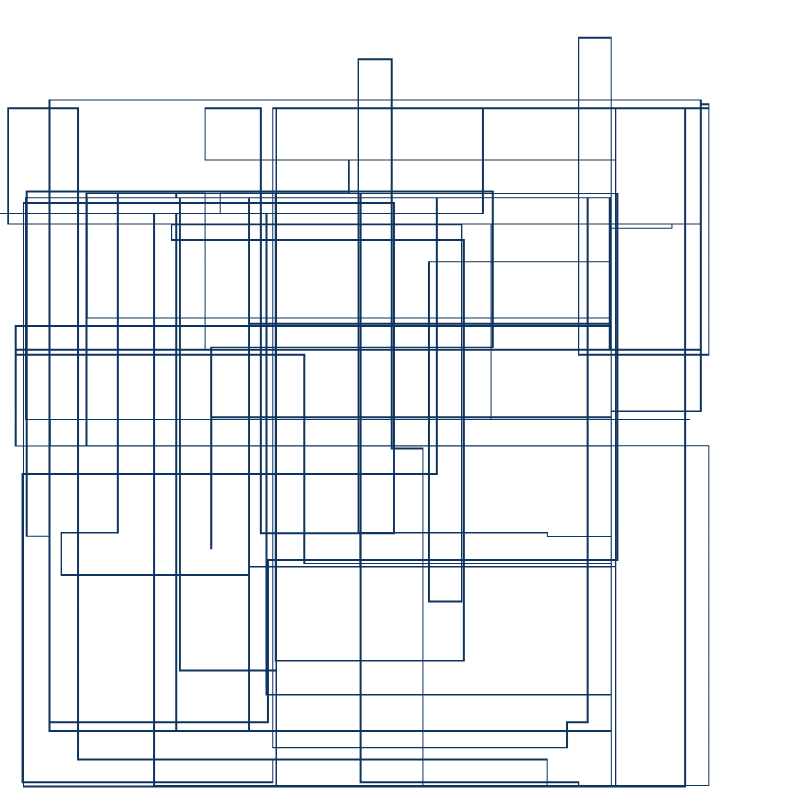

This page was inspired by SMBC comic strip that I cannot find. The idea discussed there was that single (very special) point on a line can be interpreted as all knowledge. Obviously there are many points on a line that render nosnese, gibberish or something false. So our endevour is to try to find this couple points, that can be interpreted as true, pretty or good. It got me thinking and never left me.
Years later it resulted in this humble joke of a page. It was generated using LLM tools HEAVILY. This excercise and served as lesson to learn how to use it. Except for this text on this page. It is mine. Typos and all.
Water was wated on generating tos code lines. I persume that more water would be consumed if I tried to do it by hand. I hope that your sense of wonder was touched and it was worth what was spilled. And water can be recycled and wonders live beyond material.
-Witek
